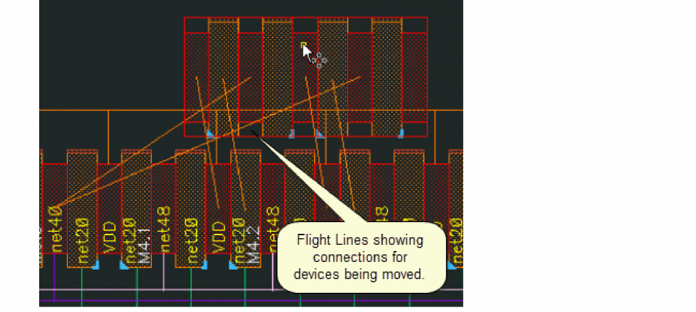
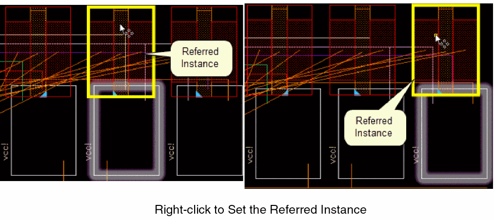
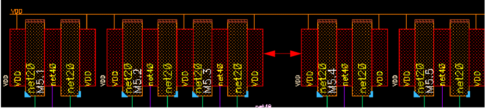
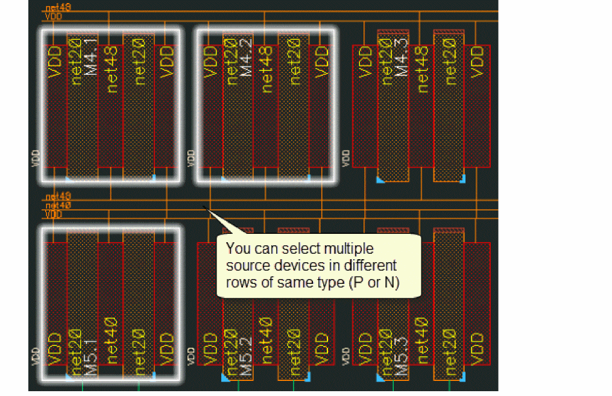
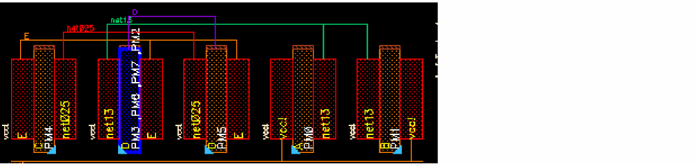

3
Editing Symbolic Devices
After Generating a Symbolic Placement, you might want to edit the devices to optimize the design. SPD enables you to perform various device editing tasks such as moving, abutting, swapping, flipping, and stacking the devices. You can also split fingered devices, generate chained devices and add dummy devices to the design.
This chapter shows you how to edit symbolic devices in SPD. The chapter discusses the following topics.
- Loading a Design
- Undoing and Redoing Commands
- Moving Symbolic Devices
- Abutting and Unabutting Symbolic Devices
- Swapping Symbolic Devices
- Flipping Symbolic Devices
- Permuting Symbolic Devices
- Stacking Symbolic Devices
- Splitting Fingered Devices
- Folding Symbolic Devices
- Aligning Symbolic Devices
- Generating Chained Devices
- Adding Dummy Devices
- Backannotating Symbolic Devices
Loading a Design
SPD lets you load a previously saved SPD design and continue working in it. To load a design:
-
Choose Place – Load [
F5].
The Load SPD Design form is displayed.
-
Select the version of the saved design you want to open.
A preview of the selected design is shown in the bottom section. - Click OK.
The selected design opens in the canvas.
If there are several designs listed in the Load SPD Design form, you can perform the following tasks to sort the designs:
- Click the header of the Version column to sort designs by the version number.
- Click the header of the Modified column to sort the designs by the modification time.
- Click any of the header columns two times to change the sorting direction.
Undoing and Redoing Commands
To undo a command, choose Edit – Undo or press u. Alternatively, choose the Undo button.
To reinstate a change that you canceled with Undo, choose Edit – Redo or press Shift+u. Alternatively, choose the Redo button.
For more information, see
Moving Symbolic Devices
The Move command lets you move symbolic devices from one location to another within the SPD canvas. You can move objects either to an empty space or insert them directly into an existing chain. When moved to another chain, the object is directly inserted into the target chain.
SPD provides the following moving options:
- Moving Devices
- Moving Multiple Instances
- Moving Devices Based on Whether Horizontal Packing is Enabled
Moving Devices
To move devices using the Move Command:
-
Choose Edit – Move [
m] or click the Move button on the SPD toolbar. - Select one or more symbolic objects in the SPD canvas.
-
Click the reference point for the move (the point from which the move starts).
Flight lines show the connections for the devices being moved. When the objects are moved, the flight lines are dynamically updated. -
Click a target instance or the space into which you want to move the selected objects.
Moving Multiple Instances
Moving multiple instances depends on whether the Move to insert in one location check box on the Placement options form is selected.
When this option is selected, SPD sets a referred instance, which is then used to move all selected instances to the specified location.
Referred Instances
Referred Instances are selected differently in the IC6.1.x and the advanced nodes version of the software.
- In IC6.1.x, when you select multiple instances to move, the left-most instance is considered as the referred instance.
-
(ICADVM20.1 Only) In advanced nodes, you can right-click to select the referred instance. The referred instance is highlighted in advanced nodes.
(ICADVM20.1)
Move In Multiple Rows
When you select multiple chains to move, the chains are dropped to the X-coordinate of the referred instance.
By default, when you move more than one instances in SPD, all moved instances are dropped at the specified location. The instances retain their original device order after move.
To move multiple instances to the same location:
- Choose Options – SPD – Placement.
-
Ensure that the Move to insert in one location check box is selected.
-
Select multiple instances to move.
-
Point to the location where you want to move the instances.

-
Selected instances are dropped at the specified location.
To move multiple instances to relative locations based on their x-coordinate:
- Choose Options – SPD – Placement.
-
Deselect the Move to insert in one location check box.

-
Select instances to move.
-
Point reference object to the location where you want to move them.
-
Instances are moved based on their relative positions.
With the Move command active, press F3 to display the Move form. Use this form to customize the scope of move using the Connections option.
For more information on moving objects, see
Moving Devices Based on Whether Horizontal Packing is Enabled
By default devices in an SPD design are packed when you move some of the devices. If needed, you can disable horizontal packing of devices after move. To do this, perform the following steps:
- Choose Options – SPD – Placement.
-
Deselect the Auto pack in X direction check box.
. -
Select the instances to move.
-
Point to the location where you want to move the instances.
-
Instances are moved and placed at the exact location where you moved them.
When Auto pack in X direction option is selected, the instances are automatically packed after move, which is the default setting.
Abutting and Unabutting Symbolic Devices
Abutment allows symbolic devices to be automatically overlapped, aligned, and electrically connected without introducing a design rule violation or connectivity error. Abutment reduces the area occupied by a circuit and the length of the interconnect wiring. When two instances are abutted, the body contacts between the instances are deleted.
Abutment is a row-based operation. When you select multiple instances for abutment, the instances in each row are abutted separately.
Highlighting and Selection when the Abut Command is Active
When the Abut command is active, you can point at a source or drain of an instance, and select the respective pin for abutment. In this case, the selected instance is not highlighted in the source schematic.
The SPD Editor provides the following abutment and unabutment options:
Abutting Devices
You can perform the following device abutment tasks from the SPD Editor:
- Abutting in pre-select mode
- Abutting in post-select mode
- Abutting chains
- Abutting Devices Based on Whether Horizontal Packing is Enabled
- Abutting all devices
Abutting in pre-select mode
To abut symbolic devices in pre-select mode:
- Select two or more devices to abut. Each selected instance includes a source, a gate, and a drain.
-
Choose Edit – Abut [
b] or click the Abut button on the SPD toolbar.
The selected instances are abutted.
Abutting in post-select mode
To abut symbolic devices in post-select mode:
-
Choose Edit – Abut [
b] or click the Abut button on the SPD toolbar. - Select source or drain of the first instance.
-
Select source or drain of the second instance. You will be able to select source and drain on same net as the first instance.
The selected instances are abutted.
Abutting chains
To abut two chains in post-select mode:
-
Choose Edit – Abut [
b] or click the Abut button on the SPD toolbar. - Select the outer source or drain of the first chain.
-
Select the outer source or drain of the second chain.
If these chains can be abutted at the selected ends, they are moved and abutted otherwise, a warning is displayed and abutment does not occur.
Change the direction of abutment
By default, the direction of abutment is set to left. You can change it to right using the Abut form. Changing the direction of abutment affects only when you are trying to abut in middle of a chain.
For more information, see Abutting in the middle of a chain.
To change the direction for abutment:
-
Choose Edit – Abut [
b] or click the Abut button on the SPD toolbar. -
Press
F3.
The Abut form is displayed.
- Change the direction for abutment and click OK.
Abutting in the middle of a chain
When you abut in the middle of a chain, the Abut command can move the chain and insert the first chain into another. Abutting in middle of chain works differently based on the direction for abutment. This is depicted in the figure below:
The abutment might break the chain. You can use the abut command again and try to abut the two chains.
Abutting Devices Based on Whether Horizontal Packing is Enabled
When the Options – SPD – Placement – Auto pack in X direction check box is selected, devices are packed after abut. However, if this check box is deselected automatic packing of devices in the horizontal direction does not take place after abut. The following steps show this difference.
-
Select devices to abut.
-
When the Options – SPD – Placement – Auto pack in X direction check box is not selected, devices are not packed after abut.
-
When the Options – SPD – Placement – Auto pack in X direction check box is selected, devices are automatically packed after abut.
Abutting all devices
To abut all the devices in the design:
-
Choose Edit – Abut All or click the Abut All button on the SPD toolbar to abut all instances in the current design.
If the Abut All command is run on a single device, device is permuted or flipped automatically to maximize the abutment while retaining the device order.
is run, devices are packed automatically Options – SPD – Placement – Auto pack in X direction option
Unabutting Devices
You can perform the following device unabutment tasks from the SPD Editor:
- Unabutting devices in pre-select mode
- Unabutting devices in post-select mode
- Unabutting Devices Based on Whether Horizontal Packing is Enabled
- Unabut all devices
Unabutting devices in pre-select mode
To unabut devices in pre-select mode:
- Select two or more devices to unabut.
-
Choose Edit – Unabut [
Shift+b] or click the Unabut button on the SPD toolbar to remove abutment from the selected devices.
Notice that the unabut operation breaks the chain.
Unabutting devices in post-select mode
To unabut devices in post-select mode:
- Choose Edit – Unabut or click the Unabut button on the SPD toolbar.
-
Choose source or drain to break the chain.
When you pre-highlight a source or drain, an information balloon displays the number of abutted devices on the left and right of the selection, as shown in the figure below.
-
The devices are unabutted.
Unabutting Devices Based on Whether Horizontal Packing is Enabled
When the Options – SPD – Placement – Auto pack in X direction check box is selected, devices are packed after unabut. However, if this check box is deselected, automatic packing of devices in the horizontal direction does not take place after unabut. The following steps show this difference.
-
Select devices to unabut.
-
When the Options – SPD – Placement – Auto pack in X direction check box is not selected, devices are not packed after unabut.
-
When the Options – SPD – Placement – Auto pack in X direction check box is selected, devices are automatically packed after unabut.
Unabut all devices
-
Choose Edit – Unabut All or click the Unabut All button on the SPD toolbar to unabut all devices in the design.
Abutting Dummy Poly Devices (ICADVM20.1 Only)
SPD supports dummy poly abutments only through user-defined abutment. You need to define and register callback functions in SKILL for dummy poly abutments.
For more information on user-defined abutment SKILL functions, see
Swapping Symbolic Devices
Use the Edit – Swap [s] command or click the Swap button on the SPD toolbar to swap the positions of symbolic instances in the SPD Editor. Flight lines are dynamically updated. The location of the symbolic instances is switched, but their orientation remains the same.
To swap two instances, select one of the above options and then click the instances that need to be swapped. In the following example, two adjacent instances in the same row are swapped:
You can also swap non-adjacent instances in the same chain. In the following example, two non-adjacent instances in the same chain are swapped. The selected instances are swapped, but the original abutment is lost and the chain is broken.
The following example represents the swapping of instances in two different chains.
Swapping Devices Based on Whether Horizontal Packing is Enabled
When the Options – SPD – Placement – Auto pack in X direction check box is selected, devices are packed after you swap devices. However, if this check box is deselected, automatic packing of devices in the horizontal direction does not take place after swapping devices. The following steps show this difference.
-
Select the device you want to swap.

-
When the Options – SPD – Placement – Auto pack in X direction check box is not selected, devices are not packed after swap.
-
When the Options – SPD – Placement – Auto pack in X direction check box is selected, devices are automatically packed after swap.
Flipping Symbolic Devices
You may need to flip symbolic instances or chains horizontally or vertically to optimize placement. When you flip one instance, it is mirrored based on your selections. If you flip a chain, the chain order is reversed and all its instances are mirrored. Flight lines are dynamically updated.
Flipping works differently depending on whether instances or chains are pre-selected or post-selected.
Flipping in Pre-select Mode
To flip an instance or chain in pre-select mode:
- Select one or more instances or chains to be flipped.
-
Select either Edit – Flip Horizontal [
Ctrl+j] or Edit – Flip Vertical [Shift+j] or click the respective buttons on the SPD toolbar. -
The selected instances or chains are flipped to their horizontal or vertical images.
Flipping in Post-select Mode
To flip an instance or chain horizontally in post-select mode:
- Select Edit – Flip Horizontal or click the Flip Horizontal button on the SPD toolbar.
- Select the drain or source of the first instance.
- Select the drain or source of the second instance.
-
All chains (and instances) that lie between the two selected instances are flipped.
To flip an instance or chain vertically in post-select mode:
- Select Edit – Flip Vertical or click the Flip Vertical button on the SPD toolbar.
- Select an instance.
- The instance is flipped to its vertical mirror image.
Flipping Horizontal Using Permutation
You can use permutation if you need to flip symbolic instances or chains horizontally without changing their orientation.
Flipping Instances Horizontally Using Permutation
To flip instances horizontally using permutation:
- Select either Edit – Flip Horizontal or click Flip Horizontal button on the SPD toolbar.
-
Press
F3to display the Flip Horizontal form.
- Select Permute and click Hide.
-
Select the drain and source of the instances to be permuted one by one.
The instances are permuted. The nets of the source and drain are permuted, however, the orientation of the gate does not change.
Flipping Chains Horizontally Using Permutation
To flip chains horizontally using permutation:
- Select either Edit – Flip Horizontal or click the Flip Horizontal button on the SPD toolbar.
-
Press
F3to display the Flip Horizontal form.

- Select Permute and click Hide.
- Click the source or drain on the first instance to mark the start of the chain.
-
Click the source or drain of the last instance to mark the end of the chain.
Nets on the source and drain pins are exchanged for all instances in the chain, however, their original orientation is retained. Also, flight lines are dynamically updated and if needed, the chain is broken automatically to retain the original connections.
Pins can be permuted only if apermuteRuleis appropriately defined. For more information, see permuteRule in the Virtuoso Layout Suite XL User Guide.
Horizontal Flipping Based on Whether Horizontal Packing is Enabled
When the Options – SPD – Placement – Auto pack in X direction check box is selected, devices are packed after you flip devices horizontally. However, if this check box is deselected, automatic packing of devices in the horizontal direction does not take place after flipping devices horizontally. The following steps show this difference.
-
Select the device you want to flip horizontally.
-
When the Options – SPD – Placement – Auto pack in X direction check box is not selected, devices are not packed after flipping devices horizontally.
-
When the Options – SPD – Placement – Auto pack in X direction check box is selected, devices are automatically packed after flipping devices horizontally.
Permuting Symbolic Devices
The Permute command permutes the devices without changing the orientation. The command works differently when the auto permutation is enabled or disabled in Layout XL.
To enable automatic pin permutation:
-
Choose Options – Connectivity.
The Connectivity form is displayed. -
On the Generation tab, select Permute pins.
- Click OK.
For more information, see
permuteRule is appropriately defined. For more information, see permuteRule in the Virtuoso Layout Suite XL User Guide. This section covers the following permutation tasks that you can perform from the SPD Editor:
- Permuting an instance
- Permuting multiple instances
- Permuting instance in a chain
- Permuting Based on Whether Horizontal Packing is Enabled
Permuting an instance
-
Choose Edit – Permute [
Shift+p] or click the Permute button on the SPD toolbar. -
Select an instance to be permuted.
The selected instance are permuted as show in the figure below.
Permuting multiple instances
To permute multiple instances:
Permuting instance in a chain
To permute an instance in a chain:
-
Choose Edit – Permute [
Shift+p] or click the Permute button on the SPD toolbar. -
Select an instance in a chain to be permuted.
The selected instance is permuted. Additionally, when auto permutation is enabled in Layout XL, the neighboring instances of the selected instance are also permuted recursively, if they can be abutted after permutation. Permutation stops until no more abutment is possible.
When auto permutation is disabled in Layout XL, only the selected instance gets permuted.
The following figure shows permutation of a chain based on the status of auto permutation in Layout XL.
Permuting Based on Whether Horizontal Packing is Enabled
When the Options – SPD – Placement – Auto pack in X direction check box is selected, devices are packed after you permute devices. However, if this check box is deselected, automatic packing of devices in the horizontal direction does not take place after permuting devices. The following steps show this difference.
Stacking Symbolic Devices
Stacking helps in optimizing a design by helping you reduce the size of the design in the physical layout.
The following figure shows how the size of a design reduces when the devices are stacked in the symbolic design.
The SPD Editor provides the following stacking and unstacking options:
- Stacking a Device
- Editing a Stacked Device
- Stacking Based on Whether Horizontal Packing is Enabled
- Unstacking a Stacked Device
- Unstacking Based on Whether Horizontal Packing is Enabled
- Specifying Global Settings for Creating Stacked Devices
- Displaying List of Devices in the Stack
Stacking a Device
-
Select either Edit– Stack [
Ctrl+k] or click the Stack button on the SPD toolbar. -
Select one or more source devices for stacking.
 -
Select the target device.
The devices are stacked as shown in the figure below.
The stacked device is highlighted in blue and it displays names of all devices that are in the stack.
Editing a Stacked Device
-
Select either the Edit – Edit Stack [
Ctrl+e] option or click the Edit Stack button on the SPD toolbar.
The Edit Stack form is displayed.The top instance in the list is the bottom instance in the stack. - In the Stack box:
- Specify the spacing that should be applied between each device in the stack. The default values of P stacks and N stacks can be set using the Stack Options pane.
-
In the Number of Stacks box, specify the number of stacks you want to create. The default is
1. - Click OK to save your changes and exit the Edit Stack form.
Stacking Based on Whether Horizontal Packing is Enabled
When the Options – SPD – Placement – Auto pack in X direction check box is selected, devices are packed after you stack devices. However, if this check box is deselected automatic packing of devices in the horizontal direction does not take place after stacking devices. The following steps show this difference.
-
Select the device you want to stack.
-
When the Options – SPD – Placement – Auto pack in X direction check box is not selected, devices are not packed after stacking.
-
When the Options – SPD – Placement – Auto pack in X direction check box is selected, devices are automatically packed after stacking.
Unstacking a Stacked Device
- Select the stacked device.
-
Select either the Edit – Edit Unstack [
Shift+k] option or click the Unstack button on the SPD toolbar.
The stacked device is unstacked and each instance is placed at the right of the bottom instance.
Unstacking Based on Whether Horizontal Packing is Enabled
When the Options – SPD – Placement – Auto pack in X direction check box is selected, devices are packed after you unstack devices. However, if this check box is deselected, automatic packing of devices in the horizontal direction does not take place after unstacking devices. The following steps show this difference.
-
Select the device you want to stack.
-
When the Options – SPD – Placement – Auto pack in X direction check box is not selected, devices are not packed after unstacking.
-
When the Options – SPD – Placement – Auto pack in X direction check box is selected, devices are automatically packed after unstacking.
Specifying Global Settings for Creating Stacked Devices
You can also specify the general vertical spacing that should be maintained between stacked devices of P row and N row respectively.
- Select Options – SPD to display the SPD Options form.
- Select Stack from the SPD Options tree to display the Stack Options pane.
-
Here, specify P Stacking, N Stacking, and Max Depth values.
The settings made here apply globally to all stacked devices. However, you can override these setting for individual stacks, by specifying a different spacing in the Edit Stack form.
Displaying List of Devices in the Stack
SPD displays only the bottom device of the stack. Therefore, the names of all devices are displayed in the label of the gate of the stack. However, at times, the names of devices may not fit in the gate. In this case:
- Device names are truncated at the gate.
- Pointing at the gate displays an info balloon that lists all devices that are added to the stack.

Splitting Fingered Devices
The Split Fingered Devices option lets you place each finger of a symbolic finger device as a separate device.
For example, if you split an instance with three fingers, three separate instances, each with one finger, are generated after splitting.
-
Select a fingered device.
-
Select Edit – Split Fingered Device [
Shift+s] or click the Split Fingered Device button on the SPD toolbar.
The fingers in the device are split into separate instances.
For more information, see
Splitting Fingered Devices Based on Whether Horizontal Packing is Enabled
When the Options – SPD – Placement – Auto pack in X direction check box is selected, devices are packed after you split fingered devices. However, if this check box is deselected, automatic packing of devices in the horizontal direction does not take place after splitting fingered devices. The following steps show this difference.
-
Select the device you want to swap.
-
When the Options – SPD – Placement – Auto pack in X direction check box is not selected, devices are not packed after splitting fingered devices.
-
When the Options – SPD – Placement – Auto pack in X direction check box is selected, devices are automatically packed after splitting fingered devices.
Folding Symbolic Devices
Folding is the process of interactively dividing symbolic instances into two or more layout instances such that their terminals are connected in parallel to the same nets. You can fold the following types of symbolic instances:
- An individual transistor or a chain of transistors
-
A FinFET device or chain of FinFET devices (ICADVM20.1 Only)
To fold a transistor or a FinFET device:
- Select objects to be folded.
-
Select Edit – Fold [
o] or click the Fold button on the SPD toolbar.
The Generate Folded Devices form is displayed.
- To fold devices, specify either the Number of Folds or click the Folding Threshold based on which the number of folds is calculated. The following sections cover the procedures for folding devices:
By specifying the number of folds
To fold a device by specifying number of folds:
- Type the Number of Folds into which you want to divide the selected device. This value must be greater than the current value in this field.
-
Click Apply.
Click Show Folds or Apply to display the widths of the individual folds.
In the above example, the specified Number of Folds is 2. Therefore, the total transistor width is equally distributed between the two folds.
You can perform the following tasks:-
Click Add Fold to add new folds.
- Click Distribute to redistribute the available width across the folds.
- Click Delete to remove folds you no longer require.
If you specify multiple folds to be generated for the device, the width value displayed for each fold is controlled by the environment variable,lxGetSignifDigits. If the environment variable is not set, the width of each fold defaults to six significant digits.
For more information, see lxGetSignifDigits documentation in the Virtuoso Layout Suite XL User Guide. -
Click Add Fold to add new folds.
By specifying the number of folds for a FinFET device (ICADVM20.1 Only)
For FinFET devices that are driven for folding by the Transistor Fins value, clicking Show Folds divides the total number of fins across all the folds such that each fold gets a whole number of fins. If the number of fins cannot be evenly split into whole numbers, some folds have fewer fins.
The Fins field accepts only integer values for fins. If you type in a non-integer value, SPD automatically reverts to the last integer value.
By specifying the fold threshold
You can also fold a device by specifying a fold threshold, which defines the width for each fold.
For example, if the total device width is 120n, as displayed in the figure below, clicking Show Folds splits the width by the threshold value of 45n so that the widths of three folds are 45n, 45n and 30n.
When the selected instance is already folded, it is highlighted with a blue halo in the design. Also, the Width for the device is marked by an asterisk, as shown in the figure below.
If you only want to fold this device while keeping the others intact, you can add more folds by deducting the value from the selected Width.
Total Width of Folded Devices
As in the case of individual fold widths, the value displayed in the Total Width field is controlled by the lxGetSignifDigits environment variable.
Irrespective of the original width of the transistor, the Total Width field displays the sum of the width values of the various folds. For example, if the original width of the transistor is 4u and the sum of the fold widths is calculated at 3.999u, the Total Width field displays the width as 3.999u instead of rounding off the value to 4.
However, if the difference between the Total Width and the original transistor width exceeds the tolerance value set by using the paramTolerance environment variable, a warning message is displayed indicating that the sum of the folded widths is not equal to the original transistor width.
For more information, see paramTolerance in the Virtuoso Layout Suite XL User Guide.
Folding Devices Based on Whether Horizontal Packing is Enabled
When the Options – SPD – Placement – Auto pack in X direction check box is selected, devices are packed after you fold devices. However, if this check box is deselected, automatic packing of devices in the horizontal direction does not take place after folding devices. The following steps show this difference.
-
Select the device you want to fold.

-
When the Options – SPD – Placement – Auto pack in X direction check box is not selected, devices are not packed after fold.
-
When the Options – SPD – Placement – Auto pack in X direction check box is selected, devices are automatically packed after fold.
Aligning Symbolic Devices
You can align the gate of a symbolic device in one P or N type row with the gate of second device located in a different row located above or below the first row. When you align devices, the flight lines are dynamically updated and devices are moved in the two rows to align the selected devices. By default, the gate of the first device is aligned to the center of the second device.
If no alignment has been defined, the first gate of a chain is aligned with another gate when you generate the symbolic layout from schematic. To disable automatic alignment, deselect the Auto gate alignment check box on the Placement Options pane.
The SPD Editor provides the following alignment options:
- Aligning Devices
- Unaligning Devices
- Checking Device Alignment
- Aligning Devices Based on Whether Horizontal Packing is Enabled
Aligning Devices
-
Select Edit – Align [
a] or click the Align button on the SPD toolbar. -
Select the gate of the first device.
-
Select the gate of the second device located in either the row above or below.
If alignment between the selected devices is possible, they are aligned. Otherwise, an error message is displayed.
If you try to align a device across devices that are already aligned, an error message is be displayed informing you that cross alignment of devices is not possible.
Disabling Flight Lines During Alignment
By default, flight lines are displayed when you are aligning devices. To disable flight lines:
-
Select Edit – Align [
a] or click the Align button on the SPD toolbar. -
Press
F3
The Align form is displayed. -
Deselect the Show flight lines of gates check box.
The flight lines are removed from the canvas.
Customizing Gate Alignment
By default, the gate of the first device is aligned to the center of the second device. You can change this to align device to left or right of the second device. To do this:
-
Select Options – SPD – Placement [
e].
The Placement Options pane is displayed. - Use the Align to Gates drop-down list to change the alignment settings from Center to Left or Right.
Customizing Chain Alignment
Instances in P and N rows, by default, are aligned on the inside, closer to channel area. You can change the alignment to outside or center. For this:
-
Select Options – SPD – Placement.
The Placement Options pane is displayed. -
Use the Chain Alignment drop-down list to change the alignment settings from Inside to Outside, or Center.
Unaligning Devices
-
Select Edit – Unalign [
Shift+a] or click the Align button on the SPD toolbar. -
Select the gate of any one device of the aligned pair.
Alignment between the devices is removed and the unaligned devices are moved back to their original locations. Flight lines are dynamically updated.
Checking Device Alignment
The Check Align option provides a way to identify misalignments in the symbolic design based on the real layout and remove them if needed.
To check the symbolic design for misalignments, select Edit – Check Align [Ctrl+Shift+a] or click the Check Align button on the SPD toolbar.
Aligning Devices Based on Whether Horizontal Packing is Enabled
When the Options – SPD – Placement – Auto pack in X direction check box is selected, devices are packed after the alignment is complete. However, if this check box is deselected automatic packing of devices in the horizontal direction does not take place after alignment. The following steps show this difference.
Generating Chained Devices
You can select multiple instances of same type in the symbolic design to create a device chain. The selected instances are chained and placed at the I/O pin-connected instance. If there are more than one I/O pin-connected instances, the Generate Chained Devices form is displayed to let you select the instance to place the device chain.
c] or click the Generate Chained Devices button on the SPD toolbar.The Generate Chained Devices form is displayed.
-
Select the instance where you want to insert the resultant chain.
-
Click OK.
A device chain is created and inserted at the specified location.
Generating Chained Devices Based on Whether Horizontal Packing is Enabled
When the Options – SPD – Placement – Auto pack in X direction check box is selected, devices are packed after you generate chained devices. However, if this check box is deselected, automatic packing of devices in the horizontal direction does not take place after generating chained devices. The following steps show this difference.
-
Select the devices to generate chained devices.
-
When the Options – SPD – Placement – Auto pack in X direction check box is not selected, devices are not packed after generating chained devices.
-
When the Options – SPD – Placement – Auto pack in X direction check box is selected, devices are automatically packed after generating chained devices.
Adding Dummy Devices
Some electrical configurations might require you to add dummy devices in the design. You can add dummy devices to the left, right, or on both sides of the selected device.
-
Select a device for which you want to add the dummy.
-
Select Edit – Add Dummy – Left, Right or Both, or select the respective option from the Add Dummy drop-down button on the SPD toolbar.
The Dummy Options form is displayed.
- Specify the Net to which the dummy device will be connected.
-
Specify the following parameters and click OK:
Dummy devices are added to the design.

Abutment for Dummy Devices
The inserted dummy device is abutted to its neighbor, if the neighboring device is already abutted.
The inserted dummy device is not abutted:
Adding Dummy Devices Based on Whether Horizontal Packing is Enabled
When the Options – SPD – Placement – Auto pack in X direction check box is selected, devices are packed after you add dummy devices. However, if this check box is deselected, automatic packing of devices in the horizontal direction does not take place after adding the dummy devices. The following steps show this difference.
-
Select the device for which you want to add the dummy devices.
-
When the Options – SPD – Placement – Auto pack in X direction check box is not selected, devices are not packed after the dummy devices are added.
-
When the Options – SPD – Placement – Auto pack in X direction check box is selected, devices are automatically packed after the dummy devices are added.
Adding a Dummy Device to a Stacked Device
When a dummy device is added to a stacked device, a stacked dummy device is added on the specified side. The dummy device has same number instances as the stacked device.
Backannotating Symbolic Devices
Backannotation lets you add the newly added dummy devices to schematic, the dummy devices may be renamed if there is a conflict in the name in schematic or layout.
To backannotate all dummy devices to schematic:
-
Select Edit – Back Annotate – All Active Dummy Instances [
n] or click the Back Annotate button on the SPD toolbar.
A warning message informing you that the corresponding schematic cellview needs to be extracted is displayed.
- Click OK to allow the schematic cellview to be extracted.
-
All dummy devices in the symbolic design are backannotated to the schematic.
To backannotate selected dummy devices:
- Select the dummy devices to backannotate in the canvas.
-
Select Edit – Back Annotate – Selected Dummy Instances [
Shift+n]. - Click OK to allow the schematic cellview to be extracted.
- The selected dummy devices in the symbolic design are backannotated to the schematic.
Return to top